|
|
| sea anemones text index | photo index |
| Phylum Cnidaria > Class Anthozoa > Subclass Zoantharia/Hexacorallia > Order Actiniaria |
| Fire
anemone Actinodendron arboreum Family Actinodendridae updated Jul 2024 Where seen? This large anemone is often seen among seagrasses and in sandy areas near reefs on our Southern shores. They are not as abudant as other large anemones in similar areas. Usually only one or a handful, spread widely apart from one another, are seen in a large area. Features: Diameter with tentacles expanded 15-20cm. About 40 fat, fleshy cylindrical tentacles with a thick base. Tentacles studded with clusters of 'branches' with oval tips. The oral disk has white stripes with small dark spots, radiating from the mouth. Body column plain, smooth with regular ridges along the length. Colours range from brown, purple, blue, yellow, green. The animal can retract rapidly and completely into the ground when disturbed. Sometimes mistaken for a flowery soft coral (Family Nephtheidae). While the soft corals don't sting, fire anemones do!
Fiery friends: Usually, we don't see symbiotic animals living in a Fire anemone. But once, a Peacock-tail anemone shrimp (Periclimenes brevicarpalis) was seen in a Fire anemone. Status and threats: As at 2024, it is assessed not to be approaching the criteria for being listed among the threatened animals in Singapore. |
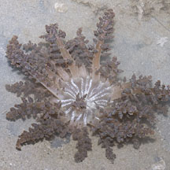 Pulau Semakau, Oct 11 |
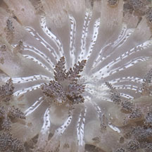 Oral disk with white stripes and dark spots. |
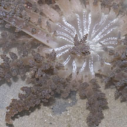 |
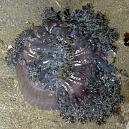 Tanah Merah, Aug 09 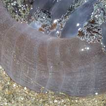 Regular ridges on body column. |
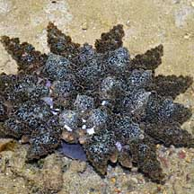 Terumbu Raya, Feb 09 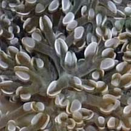 Tentacles with oval shaped tips. |
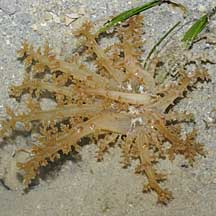 Pulau Semakau, Sep 09 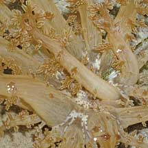 A small one about 10cm in total diameter |
 East Coast PCN, Aug 23 |
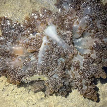 Caught a fish, which was still struggling. Kusu Island, Aug 24 Photo shared by Kelvin Yong on facebook. |
| Fire anemones on Singapore shores |
On wildsingapore
flickr
|
| Other sightings on Singapore shores |
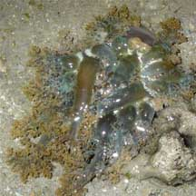 Pulau Semakau, Feb 08 |
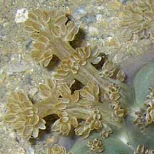 |
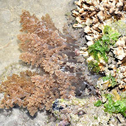 This one seen near coral. Terumbu Semakau, Jul 16 Photo shared by Loh Kok Sheng on facebook. |
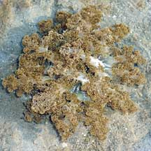 Pulau Berkas, May 10 Photo shared by Loh Kok Sheng on his flickr. |
| Taken at Pulau
Hantu in 2009 Hell's Fire Anemone snacking on fishes from Loh Kok Sheng on Vimeo. |
|
Links
References
|